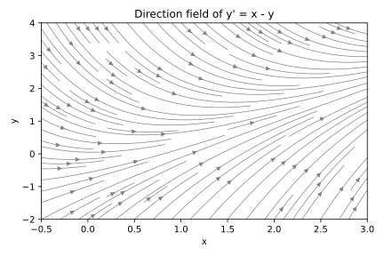
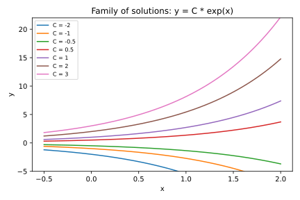
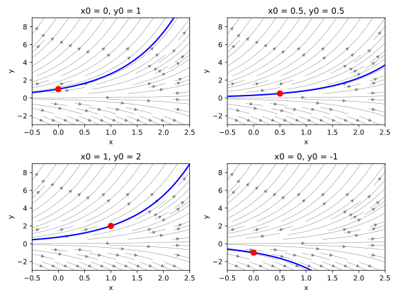
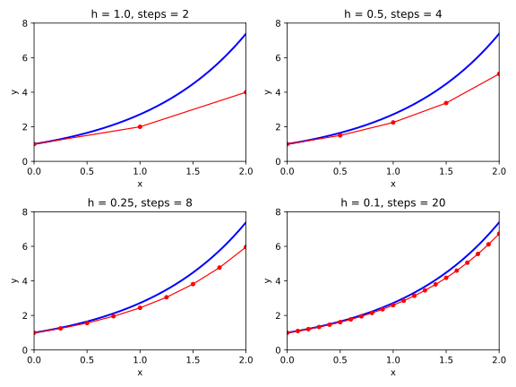
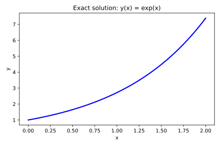

import numpy as np
import matplotlib.pyplot as plt
xs = np.linspace(-0.5, 3.0, 30)
ys = np.linspace(-2.0, 4.0, 30)
X, Y = np.meshgrid(xs, ys)
U = np.ones_like(X)
V = X - Y
fig, ax = plt.subplots(figsize=(6, 4))
ax.streamplot(X, Y, U, V, density=1.2, color='gray', linewidth=0.7)
ax.set_xlabel('x'); ax.set_ylabel('y')
ax.set_xlim(-0.5, 3.0); ax.set_ylim(-2.0, 4.0)
ax.set_title("Direction field of y' = x - y")
fig.tight_layout()
fig.savefig("02_ODEs_and_IVPs/direction-field.pdf")
fig.savefig("02_ODEs_and_IVPs/direction-field.svg")
plt.close(fig)2 Ordinary Differential Equations and Initial Value Problems
2.1 What Is a Differential Equation?
You already know the derivative. Given a function \(y(x)\), its derivative \(y'(x)\) measures how rapidly \(y\) changes as \(x\) increases: it is the slope of the curve at each point. What you have not yet encountered is an equation where the unknown is itself a function, and the equation relates that function to its own derivative.
A differential equation is exactly such an equation. The central class for this book is the first-order ordinary differential equation:
\[\frac{dy}{dx} = f(x, y)\]
Here \(f\) is a given function of two variables — the slope prescription — and \(y(x)\) is the unknown function we seek. The solution is not a number but a curve: one whose slope \(dy/dx\) at every point \(x\) exactly equals \(f(x, y(x))\).
This is a fundamentally different kind of equation from anything in calculus so far. An algebraic equation such as \(x^2 = 4\) asks: for which numbers \(x\) is this statement true? The answer is a finite set. A differential equation asks: for which function \(y(x)\) is this slope constraint true at every \(x\) simultaneously? The answer is a family of curves.
A direction field makes this slope constraint visible. At each point \((x, y)\) in the plane, draw a short arrow with slope \(f(x, y)\). Any solution curve \(y(x)\) must be tangent to the arrow at every point it passes through. The figure below uses \(f(x, y) = x - y\). At any point above the line \(y = x\), the slope \(x - y\) is negative and the curve must descend. Below \(y = x\), the slope is positive and the curve must rise. All solutions are drawn toward the long-run trend \(y \approx x - 1\).

Trace any arrow in the figure. A solution starting far above the diagonal curves steeply downward. As \(y\) approaches \(x - 1\), the slope approaches zero and the curve levels off. Every solution, regardless of starting point, exhibits this convergence — a qualitative fact you can read directly from the direction field, without solving a single equation.
The direction field is the geometric face of the differential equation. Its algebraic face is the formula \(f(x, y)\). The function \(y(x)\) we seek must make these two faces agree everywhere.
2.2 Initial Value Problems: Pinning Down a Unique Solution
A single differential equation typically has infinitely many solutions. Consider \(y' = y\): we require that the slope of \(y\) at every \(x\) equals its current value there. It is easy to verify that for any constant \(C\), the function \(y(x) = C\, e^x\) satisfies this. Differentiating: the derivative of \(C\, e^x\) is \(C\, e^x\), which equals \(y(x)\). The equation holds for every \(C\).
\[y(x) = C\, e^x, \quad C \in \mathbb{R}\]
The code below plots this family for several values of \(C\). Every curve is a valid solution to \(y' = y\). They fill the plane without crossing.
import numpy as np
import matplotlib.pyplot as plt
xs = np.linspace(-0.5, 2.0, 200)
fig, ax = plt.subplots(figsize=(6, 4))
for c in [-2, -1, -0.5, 0.5, 1, 2, 3]:
ax.plot(xs, c * np.exp(xs), label=f'C = {c}')
ax.set_xlabel('x'); ax.set_ylabel('y')
ax.set_ylim(-5, 22)
ax.set_title('Family of solutions: y = C * exp(x)')
ax.legend(loc='upper left', fontsize=8)
fig.tight_layout()
fig.savefig("02_ODEs_and_IVPs/family.pdf")
fig.savefig("02_ODEs_and_IVPs/family.svg")
plt.close(fig)
To select one solution from this family, we supply an additional piece of information: the value of \(y\) at a specific \(x\). This is the initial condition, and the combination of a differential equation with an initial condition is called an initial value problem, or IVP:
\[\frac{dy}{dx} = f(x, y), \quad y(x_0) = y_0\]
For \(y' = y\) with \(y(0) = 1\): the solution must pass through \((0, 1)\). Since \(y(0) = C\, e^0 = C\), we need \(C = 1\), and the unique solution is \(y(x) = e^x\). The initial condition collapses the infinite family to a single curve.
This uniqueness is guaranteed by the Picard–Lindelöf theorem: if \(f(x, y)\) and the partial derivative \(\partial f / \partial y\) are both continuous near \((x_0, y_0)\), then the IVP has exactly one solution in a neighborhood of \(x_0\). The continuity of \(\partial f / \partial y\) ensures the slope field cannot change so abruptly in the \(y\)-direction that two distinct solution curves might pass through the same point.
The figure below shows four different initial conditions \((x_0, y_0)\) overlaid on the slope field of \(y' = y\). The red dot marks each initial condition; the blue curve is the unique solution it determines. Every starting point selects exactly one curve from the family \(C\, e^x\).
import numpy as np
import matplotlib.pyplot as plt
xs = np.linspace(-0.5, 2.5, 30)
ys = np.linspace(-3, 9, 30)
X, Y = np.meshgrid(xs, ys)
U = np.ones_like(X)
V = Y
ics = [(0, 1), (0.5, 0.5), (1, 2), (0, -1)]
fig, axes = plt.subplots(2, 2, figsize=(8, 6))
for ax, (x0, y0) in zip(axes.flat, ics):
ax.streamplot(X, Y, U, V, density=0.9, color='gray', linewidth=0.5)
xc = np.linspace(-0.5, 2.5, 200)
ax.plot(xc, y0 * np.exp(xc - x0), color='blue', linewidth=2)
ax.plot([x0], [y0], 'ro', markersize=8)
ax.set_xlim(-0.5, 2.5); ax.set_ylim(-3, 9)
ax.set_xlabel('x'); ax.set_ylabel('y')
ax.set_title(f'x0 = {x0}, y0 = {y0}')
fig.tight_layout()
fig.savefig("02_ODEs_and_IVPs/ivp-panels.pdf")
fig.savefig("02_ODEs_and_IVPs/ivp-panels.svg")
plt.close(fig)
The direction field shows all solutions simultaneously; the initial condition picks one.
2.3 When Analytical Solutions Exist — and When They Don’t
The Picard–Lindelöf theorem guarantees a solution exists. It says nothing about whether that solution can be written in terms of familiar functions — polynomials, exponentials, logarithms, trigonometric functions, and their finite combinations. For most differential equations arising in practice, no such formula exists.
Two classes with systematic closed-form solutions are worth knowing, because they illuminate what “solvable” means and what it requires.
Separable equations take the form \(y' = g(x) h(y)\). The right side factors into a part depending only on \(x\) and a part depending only on \(y\). Dividing both sides by \(h(y)\) and integrating: the left integral involves only \(y\), the right only \(x\). This separates the equation into two standard integrals that can be solved independently.
Linear first-order equations take the form \(y' + p(x) y = q(x)\). Multiplying through by the integrating factor \(\mu(x) = \exp\!\left(\int p(x)\, dx\right)\) converts the left side into the exact derivative \((\mu y)'\), which can then be integrated directly.
The equation \(y' = y\) is both separable (write \(dy/y = dx\) and integrate both sides) and linear (\(p(x) = -1\), \(q(x) = 0\)), so SymPy’s dsolve() has no difficulty:
import sympy as sp
x = sp.symbols('x')
y = sp.Function('y')
sp.dsolve(sp.Eq(y(x).diff(x), y(x)), y(x))\(\displaystyle y{\left(x \right)} = C_{1} e^{x}\)
The output is Eq(y(x), C1*exp(x)), confirming the one-parameter family. Adding the initial condition selects the unique solution:
sp.dsolve(sp.Eq(y(x).diff(x), y(x)), y(x), ics={y(0): 1})\(\displaystyle y{\left(x \right)} = e^{x}\)
Now consider \(y' = \sin(x y)\). The right side mixes \(x\) and \(y\) in a way that is neither separable nor linear — there is no algebraic way to isolate \(x\) from \(y\) or to identify an integrating factor.
try:
result = sp.dsolve(sp.Eq(y(x).diff(x), sp.sin(x * y(x))), y(x))
print(result)
except NotImplementedError as e:
print("dsolve cannot find a closed form:", e)dsolve cannot find a closed form: The given ODE -sin(x*y(x)) + Derivative(y(x), x) cannot be solved by the lie group methodSymPy raises NotImplementedError. This is not a software limitation; no computer algebra system can produce a closed form because one does not exist. Yet the solution \(y(x)\) is perfectly well-defined for any initial condition satisfying the Picard–Lindelöf conditions. We can compute it numerically to any desired precision. We simply cannot write it as a formula.
This situation is the rule, not the exception. The equations governing a pendulum with air resistance, a driven electrical circuit with a nonlinear component, or a population with logistic coupling all fall outside the two solvable classes. Numerical methods are the standard tool.
2.4 The Numerical Strategy: Stepping Forward in Time
When a closed form is unavailable, we compute approximate values of \(y\) at a sequence of \(x\)-positions. The strategy is direct.
Suppose we know \(y_n = y(x_n)\) exactly. The differential equation tells us the slope at that point: it is \(f(x_n, y_n)\). If we step a small distance \(h\) to the right to reach \(x_n + h\), the first-order Taylor approximation gives:
\[y_{n+1} \approx y_n + h \cdot f(x_n, y_n)\]
Applying this repeatedly, starting from \((x_0, y_0)\), generates approximate values at \(x_1 = x_0 + h\), \(x_2 = x_0 + 2h\), and so on. Each step uses only the current position and the slope at that position. The approximation assumes the slope is constant over the step interval, which it is not — the slope changes as \(y\) changes. The error from this assumption is proportional to \(h^2\) per step.
The figure below applies this stepping formula to \(y' = y\) with \(y(0) = 1\), whose exact solution is \(e^x\). The blue curve is the exact solution; the red polyline connects the computed points \((x_n, y_n)\). Four step sizes are shown side by side.
import numpy as np
import matplotlib.pyplot as plt
def euler_steps(h, x_end=2.0):
n_steps = int(round(x_end / h))
xs = [0.0]; ys = [1.0]
for _ in range(n_steps):
ys.append(ys[-1] + h * ys[-1])
xs.append(xs[-1] + h)
return np.array(xs), np.array(ys)
h_values = [1.0, 0.5, 0.25, 0.1]
xc = np.linspace(0, 2, 200)
exact = np.exp(xc)
fig, axes = plt.subplots(2, 2, figsize=(8, 6))
for ax, h in zip(axes.flat, h_values):
xs, ys = euler_steps(h)
ax.plot(xc, exact, color='blue', linewidth=2)
ax.plot(xs, ys, 'ro-', markersize=4, linewidth=1.2)
ax.set_xlim(0, 2); ax.set_ylim(0, 8)
ax.set_xlabel('x'); ax.set_ylabel('y')
ax.set_title(f'h = {h}, steps = {int(round(2/h))}')
fig.tight_layout()
fig.savefig("02_ODEs_and_IVPs/euler-grid.pdf")
fig.savefig("02_ODEs_and_IVPs/euler-grid.svg")
plt.close(fig)
With \(h = 1\), one slope evaluation per unit interval, the approximation at \(x = 2\) overshoots the true value \(e^2 \approx 7.39\) noticeably. With \(h = 0.1\), it stays close. Halving \(h\) reduces the per-step error by a factor of roughly \(4\) (since it is proportional to \(h^2\)), at the cost of twice as many function evaluations. This accuracy-vs-cost tradeoff is central to all numerical ODE methods.
This formula — use the slope at the left endpoint of each interval — is Euler’s method. Chapter 4 derives it formally from the Taylor series and quantifies its error precisely. Every subsequent chapter asks the same question: can we evaluate the slope function at more than one point per step, combine those evaluations cleverly, and achieve much higher accuracy for the same \(h\)?
2.5 Setting Up Our Test Problem for the Rest of the Book
Every method in this book — Euler, RK2, RK3, and RK4 — will be benchmarked against the same initial value problem:
\[\frac{dy}{dx} = y, \quad y(0) = 1\]
The exact solution is \(y(x) = e^x\). This benchmark earns its place for three reasons. First, the exact answer is known, so we can compute the numerical error precisely at every step rather than estimating it. Second, \(e^x\) is smooth on any finite interval and satisfies the Picard–Lindelöf conditions without subtlety, so we never have to worry about existence or uniqueness. Third, the slope function \(f(x, y) = y\) is the simplest possible — just the current value of \(y\) — yet the exponential growth it drives is nontrivial enough to reveal real differences between methods.
We define the test problem in Python now. Every subsequent chapter will reload these definitions at the top of its notebook.
def f(x, y):
return yimport numpy as np
def exact_solution(x):
return np.exp(x)x0 = 0.0; y0 = 1.0; x_end = 2.0Two quick consistency checks: the exact solution at \(x_0\) must equal \(y_0\), and the slope function at the starting point must return the value \(f(0, 1) = 1\) (since \((e^x)'\big|_{x=0} = 1\)).
exact_solution(x0) == y0np.True_f(x0, y0)1.0Both return 1 (the first as True, the second as 1.0). The slope at the starting point equals the function value, which is precisely the self-referential property that drives exponential growth.
Here is the exact solution plotted over the integration interval \([0, 2]\). This is the target curve that every subsequent chapter’s numerical method will try to match.
import numpy as np
import matplotlib.pyplot as plt
xs = np.linspace(0, 2, 200)
fig, ax = plt.subplots(figsize=(6, 4))
ax.plot(xs, exact_solution(xs), color='blue', linewidth=2.2)
ax.set_xlabel('x'); ax.set_ylabel('y')
ax.set_title('Exact solution: y(x) = exp(x)')
fig.tight_layout()
fig.savefig("02_ODEs_and_IVPs/exact-solution.pdf")
fig.savefig("02_ODEs_and_IVPs/exact-solution.svg")
plt.close(fig)